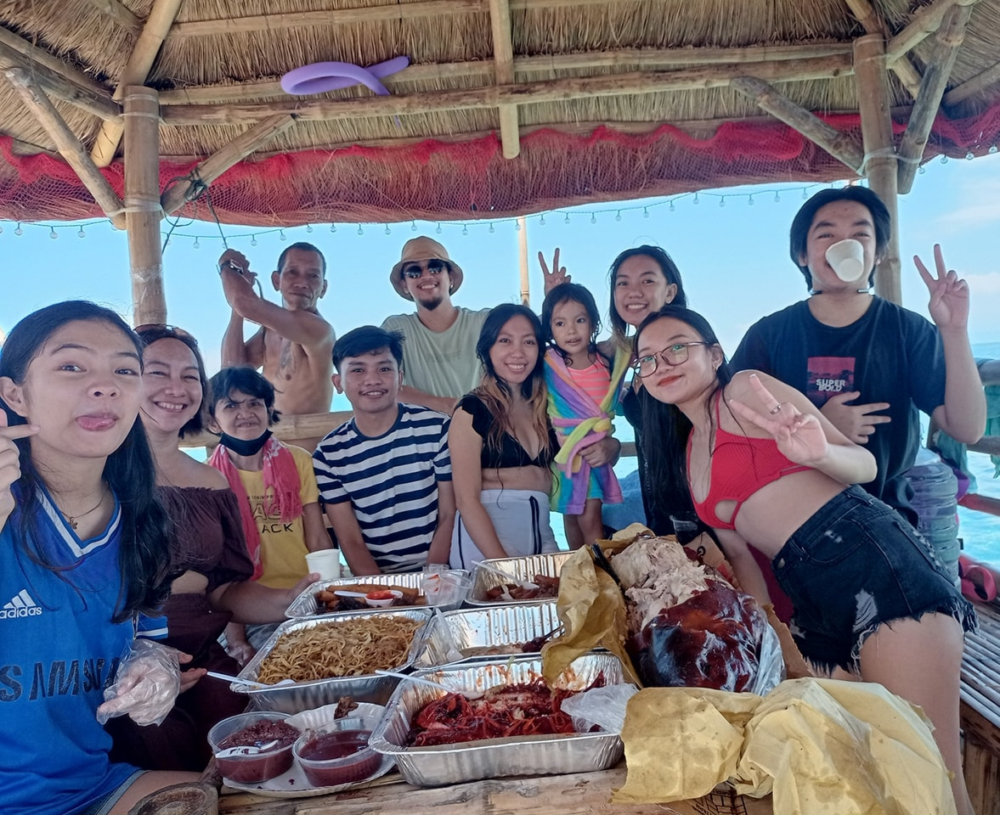
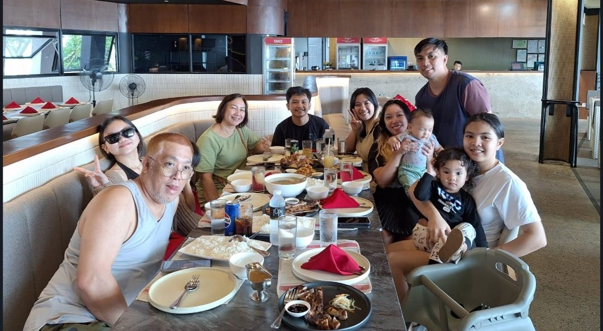
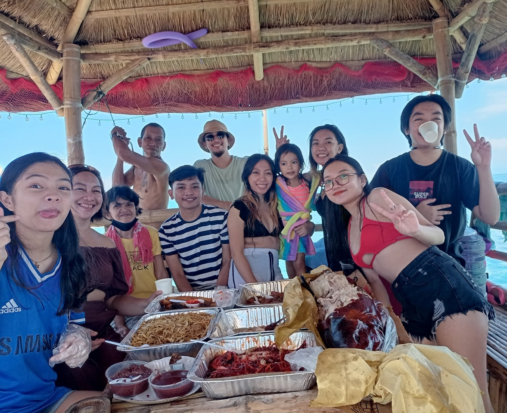
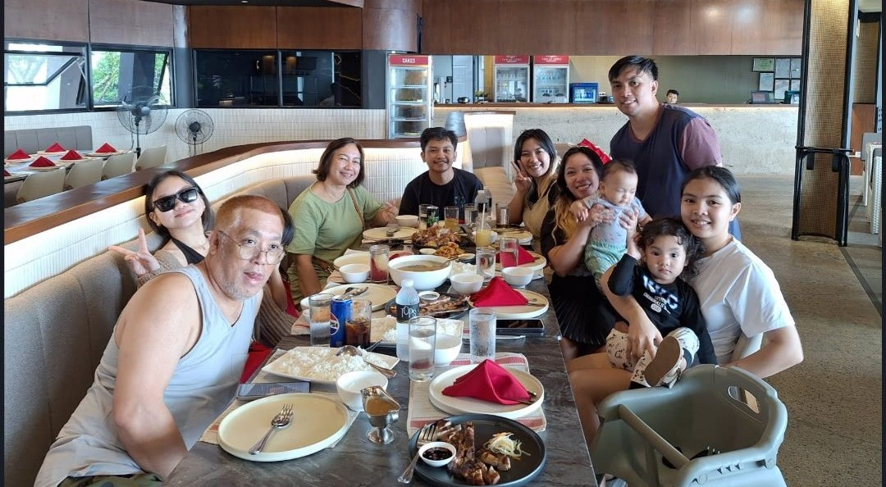
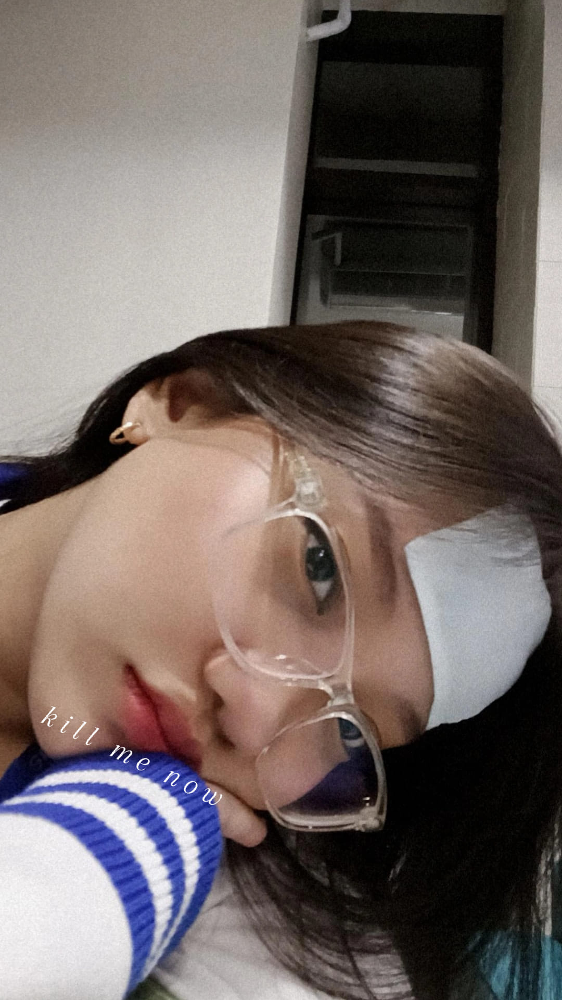

About Me
I'm a happy, go-with-the-flow individual who values adventure, family, loyalty, and honesty. My goal is to grow in the tech field and contribute positively to the world through technology.
Little Me
A glimpse into my childhood and where I started.
As a little girl, I was always the one with a big grin and dirt on my knees. Climbing trees in my grandmas place was my favorite adventure, and I would laugh loudly as I scrambled up the branches, my chubby cheeks rosy with excitement. My bangs bounced with every step as I raced outside, ready to explore without a care in the world. Every afternoon after kindergarten, I would dive into playtime digging, climbing, and running until my uniform was a colorful mix of dirt and joy. By the time I came home for dinner, I was bursting with stories to tell my family and cousins, my clothes covered in dirt from my day of fun. I would proudly show off my twigs-filled bangs, knowing that life was simple and sweet, and every day was a joyful adventure waiting to be had!
 



Middle School to High School
Middle school was a mix of laughter and mischief for me. I cut classes more often than I should have, but my grades stayed strong, thanks to my knack for learning in my own way. High school was a blast! Every day was an adventure filled with unforgettable moments and friendships that shaped my life. I learned so much from my classmates and the exciting activities we did together. Graduation day was the highlight!I found out my bestfriend is pregnant and I was soon to be a godmother, I was so happy and walking across the stage, I felt my heart race as I saw my mom and dad beaming with pride. Graduating with high honors made me so happy, and their smiles reminded me how blessed I am. Looking back, those years were thrilling and full of joy!

Me Now
Right now, I’m a happy working student who always gets sick, juggling full 8-hour shifts at work and school. Life is busy, but I love it! My free time usually involves cleaning the house, doing laundry, or whipping up something delicious in the kitchen. Baking is my little escape, and there’s nothing better than enjoying a sweet treat after a long day. On my days off, I cherish evening strolls under the stars—it's the perfect way to unwind. I love to eat and sleep a lot now; those cozy moments recharge me for the adventures ahead. I feel blessed for who I am and what I’ve become, always eager to learn more. I'm ready to take risks for a better life, and I hold my family close to my heart. Life is a beautiful journey, and I’m excited for every step!
